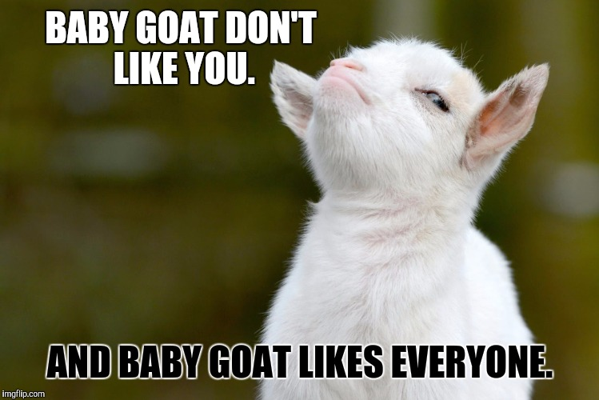
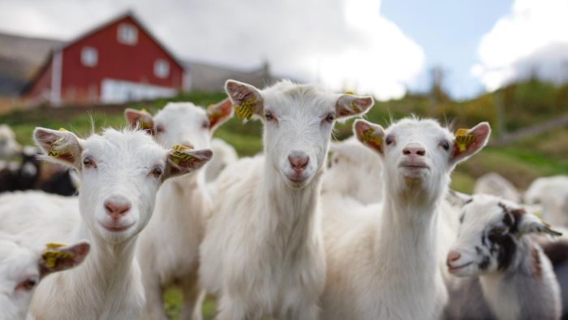
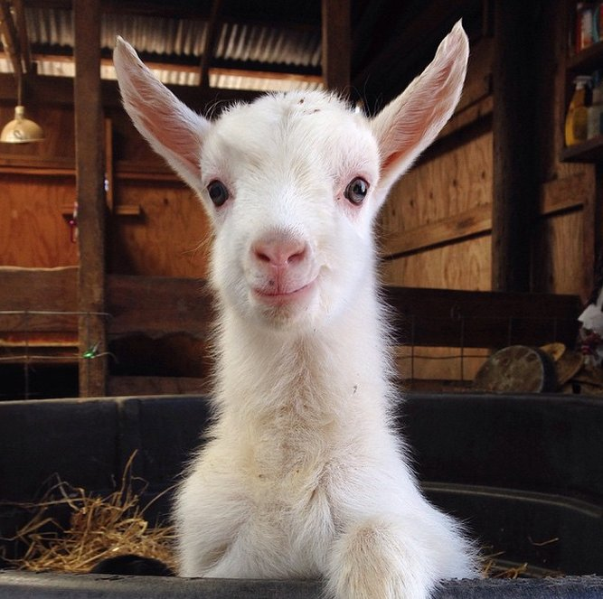
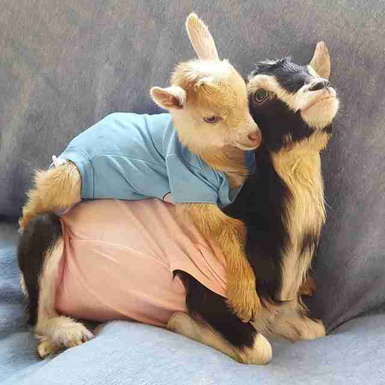
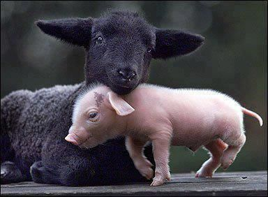
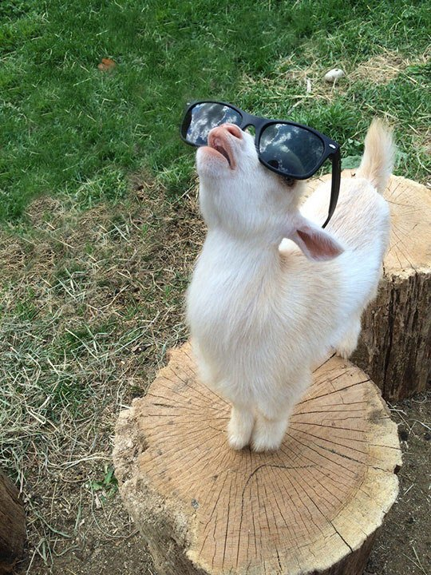

- Goats were one of the first animals to be tamed by humans and were being herded 9,000 years ago.
- Goat meat is the most consumed meat per capita worldwide.
- Goats can be taught their name and to come when called.
- The life span of a goat is about that of a dog.

- Counter to the dominant stereotype about goats being willing to eat anything, they are actually very picky eaters. They have very sensitive lips, which they use to “mouth” things in search of clean and tasty food. They will often refuse to eat hay that has been walked on or lying around loose for a day.
- Goats are herd animals and will become depressed if kept without any goat companions. So, it is unhealthy for a goat if a family just owns one as a pet.

- Goats, being mountain animals, are very good at climbing; they’ve been known to climb to the tops of trees, or even dams!
- Goats’ pupils (like many hooved animals) are rectangular. This gives them vision for 320 to 340 degrees (compared to humans with 160-210) around them without having to move and they are thought to have excellent night vision.
- Goats have horizontal, rectangular pupils!

- Goats are foragers, NOT grazers. It is actually unnatural to graze a goat on grass and increases the likelihood of them picking up harmful parasites. In their natural habitat, they roam mountaintops and reach up as high as possible to pick out choice bits of forage around them.
- Goats have four “stomachs.” Their food moves first into the rumen (from which it is periodically regurgitated for more “cud chewing”), then to the reticulum, later to the omasum, and finally to the abomasum (which is most like a more sensitive human stomach).

- Goats are burpers! This is due to the role of their rumen. The rumen, which in a mature goat holds four to five gallons of plant material, breaks down cellulose and acts as a fermentation vat. Of course, fermentation produces gas, and this gas escapes in the form of loud, healthy burps. Our goats can frequently be heard burping in the barn.

- Goats have a gestation period (pregnancy) of five month and the average birth rate for goats is 2.2 kids per year.
- Baby goats (kids) are standing and taking their first steps within minutes of being born.
- Each kid has a unique call, and along with its scent, that is how its mother recognizes it from birth – not by sight.